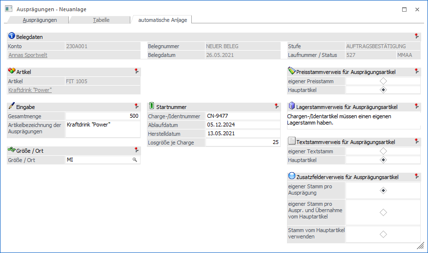
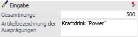
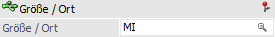
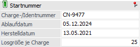
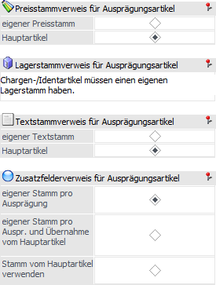

In dem Register "automatische Anlage" können Chargen- bzw. Identnummern in Form einer Schnellanlage erfasst werden.
Hinweis
Das Register steht nur zur Verfügung, wenn es sich um einen Hauptartikel handelt, welcher mit Chargen- oder Identnummern (mit oder ohne weitere Ausprägungen) geführt wird.

Belegdaten (nur in Belegerfassung)

Wenn das Fenster "Ausprägungen erfassen" in der Belegerfassung geöffnet wird, so steht der Bereich "Belegdaten" zur Verfügung. Dort werden die relevanten Informationen, bezogen auf den aktuellen Beleg, dargestellt.
Artikel

An dieser Stelle wird der auszuprägende Hauptartikel mit Nummer und Bezeichnung angezeigt.
Eingabe

Ø Gesamtmenge
An dieser Stelle wird die Menge angegeben, für welche in der Folge Identnummern bzw. Chargen angelegt werden sollen.
Hinweis
Bei Identnummernartikeln ist die Trennung immer "1", d.h. bei einer Mengeneingabe von "15" werden 15 Identnummern angelegt. Bei Chargenartikel kann über das Feld "Losgröße Charge" die Menge pro Charge definiert werden.
Ø Artikelbezeichnung der Ausprägungen
In dem Feld "Artikelbezeichnung der Ausprägungen" kann die Bezeichnung der neu anzulegenden Artikel hinterlegt werden. Diese Bezeichnung wird für alle Artikel verwendet.
Ausprägung

Ø Ausprägung 1 / Ausprägung 2
Wenn es sich um einen Artikel handelt welcher neben Chargen- bzw. Identnummern auch mit weiteren Ausprägungen geführt wird, dann kann an dieser Stelle hinterlegt werden, für welche Ausprägung(en) die Chargen- bzw. Identnummern erzeugt werden sollen.
Startnummer

Ø Chargen-/Identnummer
An dieser Stelle kann die Startnummer der neuanzulegenden Chargen- bzw. Identnummern hinterlegt werden.
Ø Ablaufdatum (nur bei Chargenartikeln)
Hier wird das Ablaufdatum für die neuanzulegenden Chargen- bzw. Identnummern festgelegt.
Ø Herstelldatum (nur bei Chargenartikeln)
Hier wird das Herstelldatum für die neuanzulegenden Chargen- bzw. Identnummern definiert.
Ø Losgröße Charge (nur bei Chargenartikeln)
An dieser Stelle kann die Menge pro Charge definiert werden.
Beispiel
In dem Feld "Menge" wird die Zahl "250" erfasst und bei "Losgröße Charge" die "100" (die Chargennummer soll bei "CN-125" beginnen). Bei Anwahl des Buttons "Ok" bzw. der Taste F5 werden folgende Chargen in der Ausprägungstabelle des Registers "Ausprägungen" angelegt:
ü CN-125 mit Menge 100
ü CN-126 mit Menge 100
ü CN-127 mit Menge 50
Stammdaten

Ø Preisstamm / Lagerstamm / Textstamm / Zusatzfelder
In diesem Bereich kann definiert werden, ob ein eigener Stamm gebildet werden oder ob auf den Stamm des Hauptartikels verwiesen werden soll.